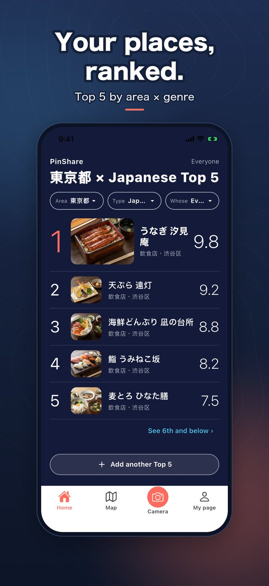
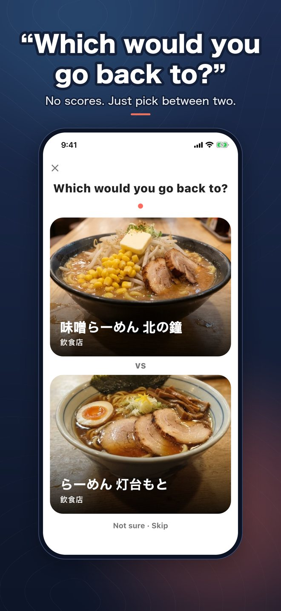
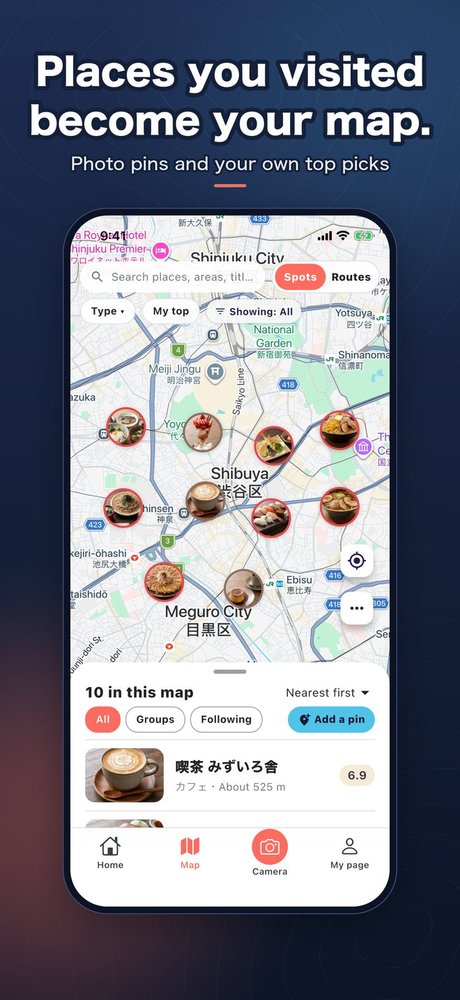
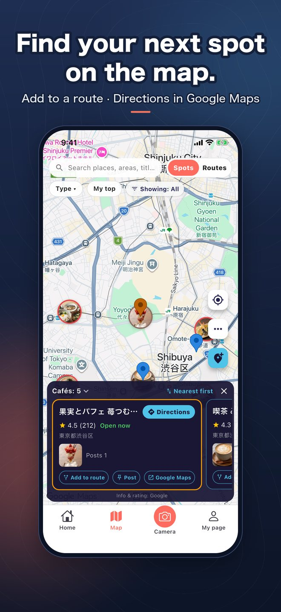
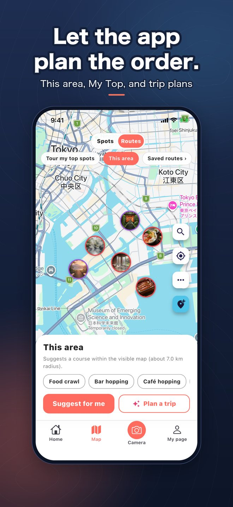
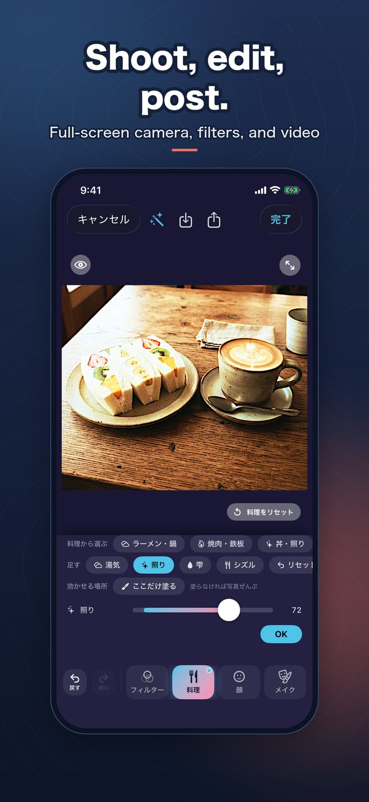

Tired of choosing by star ratings?
In PinShare, your order is decided by one thing: would you go back?
Too many 4.5-star places
Every place has a high score, and you still cannot tell which one is good. We stopped looking at ratings that way.
Bored of rankings topped by pricey places
Not ordered by price or fame, but by where you want to go again. Your neighborhood diner can be number one.
Giving a score is hard
Nobody can tell 3.8 from 4.1. But “this one or that one — which would you visit again?” is easy to answer.
Everything is free to view
Rankings, the map and routes are all free right now. Sign up and start right away.
Screens
Swipe sideways.






What you can do
Compare, keep, find and tour — in one app.
🏆 Rankings by comparing
After posting, just answer “Which would you visit again?” No scores to think about — your order sorts itself out.
🥇 Top 5 by area and genre
Pick an area and a genre to see the top 5. Switch between everyone, people you follow, your groups, and your own ranking.
⚖️ One person, one vote
Scores are the average of each visitor’s rating, one vote per person. Follower counts and post counts never change the weight of a vote, and posting the same place many times still counts once.
📍 Your own map
Places you visited stay on the map as photo pins. Filter by genre, or show only your top picks.
🔎 Find the next spot
Search shops on the map by place name or purpose. Add them to a route, and open directions in Google Maps.
🗺️ Routes and trip plans
Get a suggested order for the area you are looking at. Build a trip plan from a destination and number of days.
📷 Shoot, edit, post
A camera with live filters, text and stickers, plus video trimming and music — all inside the app.
Free. Start in one minute.
Search "PinShare" on the App Store, or tap below.
Download freeApp Store · iPhone Download on Google PlayAndroidYou choose who sees each post (default: only you). You can also make your whole account private and show it only to people you approve. Every post has report, block and mute. Photo editing runs entirely on your device. Privacy Policy / Terms of Use